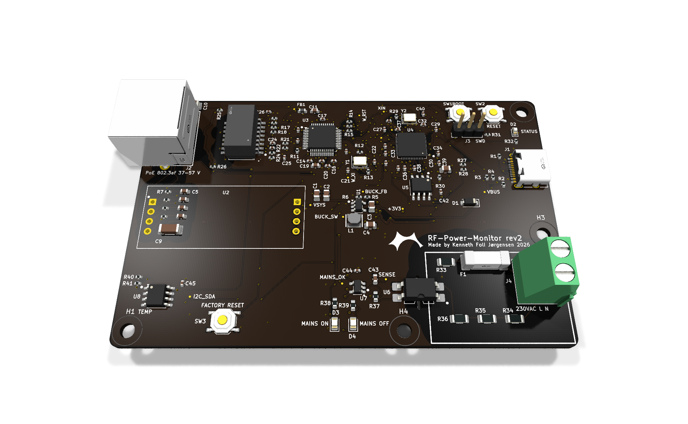

RF-Power-Monitor rev2
Mains-presence monitor with SNMP over Ethernet. RP2040 + W5500 + WIZPoE-P1 PoE module on one 100 × 64 mm two-layer board.
Board revision 2, design data 2026-11-03. Author: Kenneth Foli Jørgensen. Designed with Adom AI Flow in KiCad 10.
Status: design, not built. Every value in this datasheet is a design limit, a calculation or a simulation. No board has been built or measured yet. A human review of the board, BOM and fabrication files is advised before ordering.

3D render from KiCad. The plug-in WIZPoE-P1 PoE module (U2) has no 3D model and appears as its two 1×4 header pad rows to the left of centre.
1. Description
The board detects whether 230 VAC mains is present and reports it over 10/100 Ethernet with SNMP v1/v2c (traps, IF-MIB counters, CPU and ambient temperature). Rev1 was a carrier for the WIZnet W5500-EVB-Pico-PoE module. Rev2 puts the whole module on the board except the PoE power stage, which stays the plug-in WIZnet WIZPoE-P1. The RP2040 core copies the Raspberry Pi Pico, so the existing firmware (Arduino-Pico board pico) runs with an unchanged pin map.
2. Operating envelope (design limits)
| Parameter | Min | Typ | Max | Unit | Basis |
|---|
| PoE input (IEEE 802.3af PD, mode A or B) | 37 | 48 | 57 | V | WIZPoE-P1 module |
| USB-C VBUS input | 4.5 | 5.0 | 5.5 | V | USB 2.0 device |
| VSYS (5 V rail into the buck) | 4.3 | 5.0 | 5.25 | V | calc: USB through B5819W, or WIZPoE-P1 output |
| +3V3 output | 3.21 | 3.33 | 3.45 | V | calc: TLV62569 VFB tolerance, 1 % divider |
| +3V3 design load | | 0.18 | 0.30 | A | calc: W5500 0.132 A + RP2040 0.03 A + rest |
| VSYS load | | 0.134 | | A | calc |
| Buck output ripple | | 4.7 | | mV | simulation (ngspice, 0.3 A) |
| Mains sense input (L–N) | 0 | 230 | 264 | VAC | presence detection only, 1.2 mA peak |
| Ambient temperature (design) | 0 | | 40 | °C | indoor enclosure, assumed |
3. Functional blocks
| Block | Parts | Notes |
|---|
| MCU | U4 RP2040, U5 W25Q16JVSSIQ 2 MB QSPI flash, Y2 12 MHz ABM8 | Pico reference design: 1.1 V core regulator inside the RP2040, BOOTSEL (SW1), RUN reset (SW2) |
| Ethernet | U3 W5500, Y1 25 MHz, T1 HR601680 1CT:1CT, J2 RJ45 (no magnetics, with LEDs) | 10/100, auto-negotiation (PMODE 111), MDI only (the W5500 has no auto-MDIX) |
| PoE | U2 WIZPoE-P1 isolated 802.3af PD module, 5 V 1.5 A | Fed from the transformer centre taps (mode A) and the spare pairs (mode B). Fitted by hand, soldered or on 2 × 1×4 2.54 mm sockets |
| Power | U1 TLV62569 1.5 MHz buck, L1 2.2 µH, D1 B5819W | VSYS → +3V3. USB-C VBUS reaches VSYS through D1, as on the Pico |
| Mains sense | F1 T1A, R33–R36 4 × 68 kΩ 1206, U6 LTV-814S, U7 74LVC1G14 | Rev1 circuit, unchanged. MAINS_OK (GP27) high = mains present |
| Temperature | U8 TMP1075 on I2C0, address 0x48 | Placed away from U1, U3 and U4 |
| User | D2 blue status (GP25), D3 green mains ON, D4 red mains OFF, SW3 factory reset (GP22) | D3 and D4 are driven by hardware, not firmware |
4. Connectors and pin map
| Ref | Connector | Position (mm from top-left) | Signals |
|---|
| J2 | RJ45 8P8C, shielded, LEDs (Kinghelm KH-RJ45-56-8P8C-D) | 7.9, 11.5 (left edge; the jack front is 3.1 mm past it) | 1/2 TX±, 3/6 RX±, 4/5 and 7/8 PoE spare pairs; link and activity LEDs |
| J1 | USB-C receptacle, USB 2.0 (HRO TYPE-C-31-M-12) | 95.6, 21.0 (right edge) | VBUS, D+, D−, CC1/CC2 5.1 kΩ (UFP), GND |
| J4 | 2-pole screw terminal, 5.08 mm, 250 VAC | 93.5, 52.0 (right edge) | AC L, AC N (mains sense only) |
| J3 | SWD, 1×3 2.54 mm, not fitted | 78.8, 10.0 | 1 SWCLK, 2 GND, 3 SWDIO (Pico order) |
| U2 | WIZPoE-P1 sockets, 2 × 1×4 2.54 mm | 21.5, 33.5 | VC1± (transformer centre taps), VC2± (spare pairs), 5 V out, GND |
| RP2040 GPIO | Function | RP2040 GPIO | Function |
|---|
| GP16 | W5500 MISO (SPI0) | GP4 / GP5 | I2C0 SDA / SCL (TMP1075) |
| GP17 | W5500 CS | GP22 | Factory reset button, active low |
| GP18 | W5500 SCK | GP24 | VBUS sense |
| GP19 | W5500 MOSI | GP25 | Status LED (blue) |
| GP20 | W5500 RST | GP27 | MAINS_OK, high = mains present |
| GP21 | W5500 INT | GP29 (ADC3) | VSYS / 3 |
5. Programming
Hold BOOTSEL (SW1) while plugging in USB-C, or let pio run -t upload reset the RP2040 into its ROM UF2 bootloader over USB. SWD is available on J3 (not fitted). The firmware and its pin map are the same as for the W5500-EVB-Pico-PoE.
6. Isolation and protection
| Boundary | Clearance | Creepage | Basis |
|---|
| 230 VAC mains sense ↔ everything else | 6.5 mm | 6.4 mm | rev1 rules, held by the KiCad DRC rule file and the router's isolation domains; 5 kVrms optocoupler; routed slot under U6 |
| Ethernet line side and PoE ↔ logic | 2.0 mm | | 1500 Vrms (802.3 and the HR601680 hipot rating), Bob Smith termination to chassis |
The mains input is fused (F1, T1A 250 VAC). The mains area has no ground pour on either layer and has its own silkscreen frame with a hazardous-voltage warning. There is no TVS protection on the Ethernet, USB or mains connector pins (see section 9).
7. Mechanical
| Item | Value |
|---|
| Outline | 100.0 × 64.0 mm, 1.0 mm corner radius |
| Mounting holes | 4 × M3 (3.2 mm) at (3.5, 60.5), (36.0, 60.5), (96.5, 3.5), (96.5, 38.0) mm from top-left |
| RJ45 overhang | J2's front face projects 3.1 mm past the left edge (courtyard 3.3 mm) to pass through the case wall; its 3.2 mm board-lock holes keep 0.5 mm of board to the edge |
| Tallest parts | J2 RJ45 and J4 terminal block. The WIZPoE-P1 module sits above U2's sockets; leave headroom for it |
| Enclosure | New case to follow; rev1 case does not fit |
8. Fabrication
| Item | Value |
|---|
| Stack | 2 layers, 1.6 mm FR-4, 1 oz copper, ENIG finish, black solder mask, white silkscreen; ground pours on both layers (60 % front, 72 % back) |
| Rules | JLCPCB 2-layer pack plus isolation rules; minimum track 0.15 mm, clearance 0.1–0.15 mm |
| Assembly | JLCPCB PCBA, 109 placed parts, 55 BOM lines, all with LCSC numbers; U2 (WIZPoE-P1) and J3 are not in the assembly BOM |
| Files | Gerbers, drill, BOM and CPL checked against the board by AI Flow export; JLCPCB-format BOM/CPL generated from the design BOM |
9. Verification and known limits
| Check | Result | Kind |
|---|
| Schematic ↔ board, ERC, DRC, connectivity, courtyards, part bodies | Pass: 0 errors, 0 unconnected | design check |
| Track current (IPC-2221, every loaded net) | Pass within 10 °C | calculation |
| Current density (Adom Fields) | Pass with one reviewed peak: 63 A/mm² at the VSYS track corner into U1 pin 1, calculated at a 0.6 A design load. About 23 A/mm² at the real 0.22 A | field solve |
| Temperature rise, still air | Board peak +19 °C; U3 W5500, U4 RP2040 and U1 buck each within their rise budgets (70, 45 and 60 °C) | field solve |
| Buck ripple and peak inductor current | 4.7 mV, 0.64 A peak (L1 Isat 2.0 A) | simulation |
Known limits and risks
- The WIZPoE-P1 specifies a 150 mA minimum load on 5 V; this board draws about 134 mA typical. Check the module's behaviour at light load, or add a bleed load if it cycles.
- HR601680 is a 10/100 transformer not rated for PoE. Its centre taps carry about 19 mA DC here (802.3af allows 350 mA per pair). Low risk at this current, but not a PoE-rated part.
- The RP2040 exposed pad has 3 of the 6 thermal vias AI Flow asks for; a +3V3 track runs underneath. The chip dissipates about 0.1 W and the thermal check passed.
- +3V3 IR drop is 46 mV (1.4 %) from U1 to the farthest load at the 0.3 A design load (field solve); the rail stays at about 3.28 V, well inside every part's range.
- No TVS diodes on external connectors; no EMC or safety testing has been done. The mains section has not been hipot tested.
- Silkscreen: 19 small passives carry their reference on the fabrication layer only; 7 test points are unlabelled; the USB-C input has no voltage label.
Sources: design/requirements.json, design/calcs.json, design/sim/results.json, aiflow-run/run.json (AI Flow finish and export records), in the project folder hardware/rf-power-monitor-rev2.